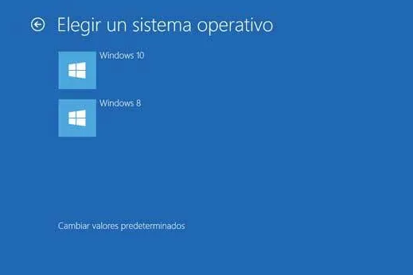
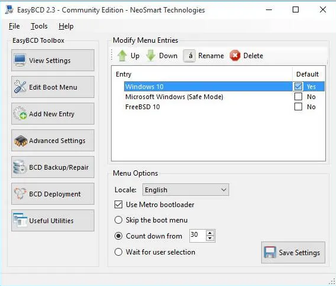
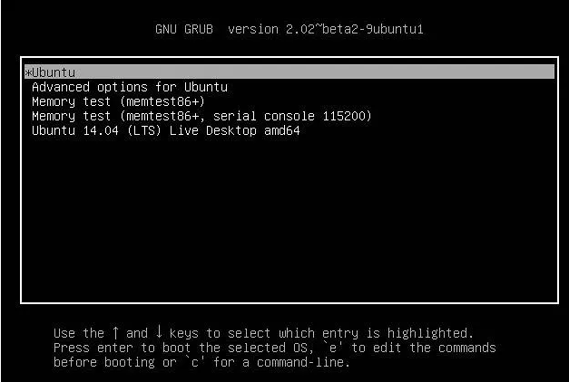

Gestión arranque#
Un gestor de arranque, como su nombre indica, es un programa que se carga al inicio del ordenador, antes del sistema operativo, y que nos permite elegir el sistema operativo que queremos cargar.
Estos programas pueden leer automáticamente las particiones del ordenador para detectar y configurar los sistemas instalados, permiten crear nuestras propias entradas (útil en el caso de Linux, por ejemplo, para cargar el sistema con parámetros o un kernel específico) y pueden contar con medidas de seguridad adicionales, como, por ejemplo, protección mediante contraseña.
Los principales sistemas operativos cuentan con sus propios gestores de arranque. Y además, nosotros mismos podemos instalar otras alternativas manualmente para hacer uso del arranque dual, o dual boot, en nuestro ordenador.
Gestor de arranque de Windows#
Cuando instalamos Windows, durante el proceso de instalación se crean una serie de particiones con ficheros críticos del sistema operativo. Una de estas particiones creadas contiene las opciones de recuperación del sistema y toda la información del arranque. También se encuentra en ella el gestor de arranque de Windows.
Si solo tenemos un sistema operativo instalado en el ordenador, este gestor de arranque no nos aparecerá. Sin embargo, en el momento que el propio asistente detecta otro sistema cualquiera, ya sea Windows o Linux, añadirá una entrada al gestor, y este nos aparecerá cuando vayamos a arrancar el PC.
Este gestor de arranque se instala automáticamente junto al sistema operativo, por lo que generalmente no tenemos que hacer nada. La mejor forma de dejarlo a punto es instalar los sistemas operativos, de más viejo (en caso de instalar Windows 7 en una partición) al más nuevo, dejando Linux en el medio e instalando Windows 10 en último lugar.
Además, desde la Configuración Avanzada > Inicio y recuperación podremos configurar el comportamiento de este gestor de arranque, como el tiempo de espera o el sistema operativo predeterminado.
Y si queremos una forma más rápida y sencilla de editar el BCD de Windows, el programa EasyBCD nos permite configurar el gestor de arranque de Windows, añadir o quitar sistemas operativos y mejorarlo para poder usarlo más cómodamente.
Gestores de arranque de Linux#
Linux, igual que Windows, tiene también su propio gestor de arranque. Según la distribución que elijamos, se instalará en el punto de montaje /boot un gestor que será el encargado de permitirnos arrancar nuestro sistema operativo.
Los dos gestores de arranque más utilizados en las distros son GRUB y LILO. Mientras que el gestor de arranque de Windows no termina de llevarse del todo bien con las particiones Linux, y mucho menos si montamos un hackintosh, con estas alternativas vamos a poder tener un gestor de arranque mucho más compatible, completo y personalizable.
La forma ideal de instalar este gestor de arranque es instalar todos los demás sistemas operativos que vayamos a utilizar, y el Linux que queramos que controle todo lo demás el último. De esta manera, cuando se instale y configure GRUB, se detectarán todos los sistemas instalados y se añadirán a la lista.
De todas formas, si en cualquier momento instalamos un nuevo sistema operativo (da igual que sea Windows o Linux), y queremos volver a generar el gestor de arranque, tan solo debemos ir a la distro Linux y ejecutar el siguiente comando para regenerar la configuración con los nuevos sistemas:
sudo update-grub2
En el caso de usar LILO, la configuración se debe llevar a cabo manualmente desde el fichero /etc/lilo.conf.
En caso de que tengamos solo Windows y queramos usar este gestor de arranque, vamos a poder usar el software Grub2Win para instalar fácilmente este gestor desde Windows.
Además, este programa cuenta con una sencilla interfaz gráfica que nos va a permitir configurar y personalizar la apariencia de GRUB, pudiendo tener todos los sistemas operativos que queramos para elegir cuál arrancar en cada boot.
Lilo, para los que no les gusta GRUB#
Aunque GRUB es el gestor de arranque más utilizado en sistemas Linux, tiene un rival que ocupa el segundo lugar y tiene un importante número de usuarios fieles a él: LILO. Acrónimo de Linux Loader, este software nos permite configurar hasta 16 sistemas operativos diferentes para elegir cuál queremos arrancar cuando encendemos el ordenador. Este gestor de arranque es compatible con sistemas de 32 bits y de 64 bits, puede arrancar discos duros internos o externos e incluso se puede instalar en el MBR del ordenador.